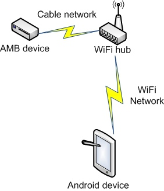

Because some older decoders connects using serial cable, these can only be connected with a tablet with serial port. If you do not have device with a serial port, check RaspiTimingBox - a device that converts from device to JSON on serial port as well.
We recommend to use ethernet-enabled device. These can be connected to a WiFi router where typical Android device can be connected. See the connection schema.
You can also use USB port, but your table must have USB host connector. Choose USB connection from the app to check.
The tester connects to default port 5403. To connect to another port, type the port in the address filed like this IP:PORT, example: 192.168.1.1:5400
How to connect
An another application can use the P3 protocol parser on the same tablet. The application implements service that can be invoked from outside and response with parsed data Java way. If your application works on another platform, contact us for another supported platforms.
AMB and MYLAPS are trademarks of MYLAPS Sports Timing, The Netherland. Thank you for providing technical support.